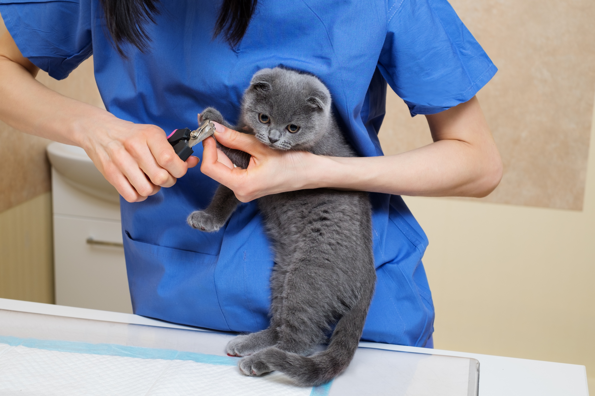
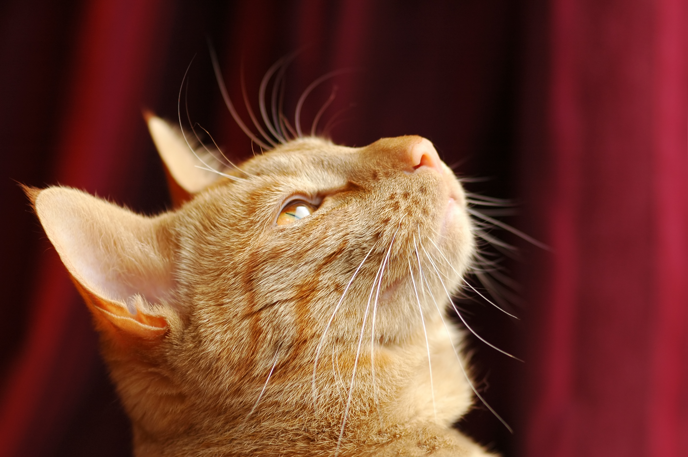

Gata Madre?
Como toda madre, tu gata presenta cambios en su comportamiento dependiendo de la etapa que esté viviendo. Aunque algunos te parezcan extraños, confía en la naturaleza y el instinto felino de la mamá gata. Pero el saber cuándo el comportamiento es normal para la etapa o es señal de que necesita asistencia médica también es importante. Conoce sobre ambos.
Durante su etapa de embarazo: la gata va cambiando sus hábitos como preparación al evento (el parto, por supuesto). Las últimas dos semanas de gestación le sirven para buscar el lugar ideal para parir y cambiar su actitud a una de "madre seria y organizada". En esta época la casi madre necesita:
• Alimentarse con más frecuencia, sobretodo con comida para gatitos. Esta es rica en proteína y calcio.
• Dormir más de lo normal. La chica necesita guardar energías
Su comportamiento puede variar hasta actuar de manera opuesta a lo usual:
• Si la gata siempre ha sido una cariñosa, en éstos días puede que prefiera la soledad.
• En cambio si siempre disfruta de estar sola y tranquila, ahora te persigue a todas partes.

Como educar a tu gato
Tu contribucion a las bases del aprendizaje de tu gatito es limitado, pero su educacon puede ser sensilla siempre que el objetivo sea claro y se recompense el comportamiento correcto en el momento adecuado.
Para educar a tu gato lo mejor es tener sesiones cortas e intervalos frecuentes, alejado de otras distracciones, con una recompensa muy apreciada por el y si el comportamiento que se le esta enselando no estuvo asosciado con una situacion negativa en el pasada
Como aprenden los gatos
La educación básica de tu gatito tiene lugar desde el nacimiento hasta los 6 meses, con el papel principal de la madre y la interacción con los hermanos. Un gatito comienza imitando las acciones de su madre, y luego aprende por sí mismo, a través de la experimentación. Por lo tanto, tu contribución a los fundamentos de la educación de tu gatito es limitada, pero aun así tienes la responsabilidad de completar su socialización en el contexto de un nuevo entorno.
El rol de la madre
Se recomienda que esperes a que tu gatito tenga al menos dos meses antes de separarlo de su madre y hermanos. Las madres gatas desempeñan un papel fundamental en la crianza de sus gatitos, ya que les enseñan hábitos sociales y de higiene con el ejemplo y a través del juego, además de alimentarlos, mantenerlos controlados, reconfortarlos y protegerlos.

Otro miembro a la familia?
¡Saluda a tu nuevo hermanito!
La llegada a casa de un nuevo gatito es un acontecimiento especial y excitante para toda la familia…¡menos probablemente para tu gato adulto!.
No importa lo bueno que sea, tu gato sigue siendo un gato, y por lo tanto es territorial por naturaleza y conoce su lugar dentro de un estricto orden de jerarquía. La llegada de una preciosa bola de pelo a su territorio podría desencadenar todo tipo de reacciones negativas. Celos, porque el recién llegado atrae de repente toda la atención. Malestar, porque los gatos son especialmente quisquillosos con la limpieza de su bandeja. Agresión y mal humor, porque un irritante jovencito se empeña en estar encima de él a todas horas.
Sin embargo, con un poco de planificación, psicología y consideración, puedes hacer que el proceso de adaptación sea relativamente tranquilo, y sentar las bases para conseguir la relación de amistad que toda familia desea cuando tiene dos gatos conviviendo en casa.
-
Paso 1: prepara la casa
Si es posible, antes de que tu nuevo gatito llegue a casa, lleva una manta (o un juguete) al criador o a la tienda de mascotas, para que se impregne de su olor. Después, llévala a casa y déjala allí para que tu gato se vaya familiarizando con él. Así, cuando por fin se conozcan, su olor ya no será completamente nuevo, y por tanto no le resultará tan amenazador.
Prepara una habitación aparte (por ejemplo el cuarto de la plancha) con juguetes, una cama, un bol para el agua y otro para la comida, para que el gatito pase los primeros días. Y no te preocupes, será sólo una medida temporal.
-
Paso 2: conociendo su olor
El día de la llegada, encierra a tu gato adulto en otra habitación en la que hayas colocado sus cosas favoritas. Lleva al nuevo gatito a casa y deja que la recorra durante un rato para que se vaya aclimatando. Luego llévalo al cuarto que habías preparado para él.Ahora ya puedes dejar que tu gato adulto salga de la habitación (pero asegúrate de que no puede acceder a la habitación del gatito). Deja que te huela las manos con las que has estado acariciando al gatito, y dale algún premio para calmarle y para que asocie el nuevo olor con "algo bueno".Introduce gradualmente el olor del gatito en la casa, por ejemplo intercambiándoles los comederos y las camas. En cuanto se hayan familiarizado con el olor, puedes permitirles que exploren el territorio del otro, pero siempre manteniéndoles separados.
-
Paso 3: cara a cara
El mejor momento para que se conozcan físicamente es la hora de la comida, cuando su deseo de comer puede con cualquier tipo de distracción. Cuando se vean por primera vez es muy posible que se gruñan y bufen. Es algo normal, forma parte del establecimiento de la jerarquía entre ellos. Vigílales y prepara una manta por si tienes que separarles en el caso de que vayan más allá y comiencen a pelearse. Pero, con un poco de suerte, con todos los preparativos anteriores, cuando finalmente se conozcan, se "reconocerán" lo suficiente como para "tolerarse" unos minutos mientras comen.
-
Paso 4: crear elacion y trato por igual
Inmediatamente después de su primera comida juntos, vuelve a separarlos hasta la siguiente comida, aumentando gradualmente el tiempo que pasan juntos. Dales a ambos atención, cariño y premios por igual mientras estén juntos. Esto no sólo creará asociaciones positivas, si no que también demostrará que no existen favoritismos.Recuerda, decidir cuál de ellos va de ser el "gato dominante" no es responsabilidad tuya; esta posición se decidirá entre ellos de manera bastante natural. Lo único que tienes que hacer es mantenerte imparcial y ser equitativo con ambos.Un precioso gatito pequeño gusta a todo el mundo, y montar un follón con todo lo que tenga que ver con él forma parte de la satisfacción de tener un segundo gato. Pero procurando que el proceso de introducción se haga de forma gradual y relajada, intentando establecer las bases de una relación respetuosa entre el gato más mayor y el gatito, y repartiendo cariño a partes iguales, tendrás una respuesta mucho más positiva por parte de ambos gatos.

Gato pelo corto o pelo largo?
Los gatos con pelo largo son muy lindos. Pero su pelo requiere de mucho cuidado.
Para que el pelaje no quede apelotonado y se mantenga sedoso, se debe cuidar regularmente. El aseo diario con cepillo y peine también puede ser una terapia tanto para el dueño como para el gato. Para los gatos con pelo largo que desde chicos se acostumbran a este proceso, estas horas son un cariño adicional.Y si no tenés tiempo para cepillar a tu gato a diario pero te fascina su pelo largo, te recomendamos una raza con pelo semilargo, ya que el pelaje apelotonado puede causar consecuencias importantes en la salud de los animales.

gato o gata?
Normalmente, los gatos son más grandes que las gatas. Pero un gato no castrado tiende a escaparse por largos tiempos y corren riesgo de involucrarse en peleas con otros gatos. También marcan su territorio con orina y excrementos, que no entierran.
Por el otro lado, las gatas no castradas regularmente entran en períodos fértiles. Es ahí cuando maúllan muy fuerte, están nerviosas y atraen a los gatos de los alrededores. Las gatas en libertad quedan preñadas y luego tendrás crías cerca de tu casa, y no siempre serán bienvenidas.

Cual es el gato adecuado? cuantos me conviene tener?
Muchos amantes de gatos no saben si es mejor tener un gato, o varios. La decisión depende del carácter de los gatos.Algunos animales prefieren la compañía, a otros les gusta más estar solos, a otros con gente… Si la mayor parte del día estás fuera de tu casa quizás es mejor tener dos gatos, para que se hagan compañía. Además un gato mayor acepta más fácilmente a un gato bebé que a otro gato adulto. La cantidad de gatos que pueden convivir sin problemas depende del tamaño de tu casa, tu tiempo y las posibilidades que puedas ofrecerles a ellos.Así como nosotros, los gatos necesitan su espacio y no les gusta estar muy amontonados. Como referencia tomemos la cantidad de habitaciones (idealmente un gato por habitación) y la cantidad de manos que van a darles cariño. Otro punto importante es el baño: a los gatos no les gusta compartirlo, por eso cada uno debería tener el suyo.

Los nutrientes adecuados
Sabías que una alimentación balanceada mantiene a los gatos en buena forma y mentalmente despiertos? La alimentación debe contener proteínas, grasas, carbohidratos, vitaminas y minerales en las cantidades y raciones correctas. Como carnívoros los gatos necesitan nutrientes que en la naturaleza solamente se encuentran en alimentos de origen animal, como por ejemplo carne e intestinos.
El agua se olvida frecuentemente en la lista de los nutrientes, pero en realidad es el alimento más importante, elegir los recipientes adecuados es muy importante a la hora de cuidar su salud, lo mas recomendado es utilizar material de ceramica para evitar hongos.

Uveítis felina, características y tratamiento
Dentro de las causas de uveítis felina se destacan aquellas de origen principalmente infeccioso. Entre los agentes y enfermedades de este tipo, se encuentran: virus de la inmunodeficiencia felina (VIF), virus de la leucemia felina (VILEF), peritonitis infecciosa (PIF), enfermedades micóticas como criptococosis o histoplasmosis, finalmente las micobacterias. El tratamiento de uveítis felina consiste en el manejo de la causa base y la atención de los signos. Se utilizan diferentes categorías de antiinflamatorios aplicados en forma local, con el propósito de aliviar el dolor y evitar complicaciones.Entre las posibles secuelas de uveítis, el glaucoma representa una de las más comunes. Toda causa de uveítis felina, por lo tanto, deberá abordarse siempre de manera completa, profunda y sin demoras.

Vómitos en gatos, información y consejos
Una variada cantidad de problemas son los que pueden ocasionar vómitos en gatos, por eso hablar de este tema será solo una orientación, no olvides que siempre el apoyo con el médico veterinario es lo mejor para preservar la salud de tu gato. Dependiendo de la causa, el vómito puede tener ciertas características, cuando se trata de vómitos por bolas de pelo o pasto, éstos se verán claramente en los fluidos expulsados por el minino. En otras ocasiones los vómitos en gatos se pueden observar desde transparentes, amarillentos, verdosos, espumosos, tener mal olor, contenido estomacal, comida digerida, presencia de parásitos. Cuando llega a haber una obstrucción en alguna porción del aparato digestivo, se llegan a observar vómitos sanguinolentos y también materia fecal de expulsión violenta.De acuerdo al lapso de tiempo entre vómitos, la edad del animal y las propias características que pueda presentar, se debe acudir al médico veterinario para que revise lo antes posible al felino, ya que algunas causas de vómitos en gatos ya mencionadas pueden poner en peligro su vida, además de el riesgo de deshidratación e inanición por regurgitaciones constantes.

Calicivirus Felino (FCV)
Existen diversas formas de que el gato se infecte por calicivirus felino, entre las que podemos mencionar la transmisión directa de gato a gato, en la que uno de los gatos será el foco de infección para otro que se encuentra saludable y no está infectado. Esta forma de transmisión se observa más comúnmente en criaderos y comunidades de gatos.Tras la infección por calicivirus felino comienza el periodo de incubación, el cual dura aproximadamente de 2 a 10 días, en los cuales se podrán observar signos más comunes como: Ulcera nasal y cavidad oral, Afeccion a nivel pulmonar, Artritis, continuas o intermitentes, afectando a una o varias articulaciones,entre otras. El manejo adecuado del dolor con analgésicos y la inflamación con AINE’s serán claves al tratar los signos presentes en las mucosas mencionadas, emplear estimulantes del apetito con dietas especiales que ayuden a la deglución del alimento, así como mucolíticos o también nebulizaciones serán de gran ayuda para el felino.

Distocia en la gata y complicaciones perinatales
La distocia en la gata agrupa las diferentes dificultades que pueden ocurrir durante un parto. Estas dificultades pueden a su vez producirse como consecuencia de irregularidades maternas o debido a alteraciones de origen fetal. entre sus causas maternas esta la estrechez del canal de parto, también conocida como estrechez pelviana. Este trastorno puede ser de tipo congénito, o responder a causas adquiridas como fracturas de cadera que reparan con desplazamiento.Las causas fetales de distocia en la gata ocurren con mayor frecuencia. Se destacan entre ellas las malformaciones por aumento de tamaño de los gatitos, la hidrocefalia y el edema generalizado. Pueden estar afectados todos o solo algunos de los fetos.Estas alteraciones fetales pueden advertirse durante el diagnóstico radiológico o ecográfico temprano, lo que permite a su vez planificar una cesárea para su resolución.Además de las causas de distocia en la gata, es importante resaltar aquellas complicaciones relacionadas con la expulsión de los tejidos fetales como la retención placentaria y la metritis.etención placentaria ocurre cuando hay tejidos fetales -o incluso fetos- retenidos y que no logran expulsarse. Esta condición puede observarse en la gata por la presencia de fiebre, inapetencia, letargo y falta de interés en la camada recién nacida.Una consecuencia habitual de la retención de tejidos es la inflamación aguda del útero (metritis) con o sin infección. Se puede evidenciar por la presencia de descargas vaginales hemorrágicas con olor desagradable. La resolución es principalmente mediante cirugía con administración simultánea de antibióticos.

Enfermedad renal crónica
La enfermedad renal crónica en gatos es una afección de desarrollo prolongado e insidioso que se manifiesta comúnmente en animales adultos y gerontes (conoce qué es un gato geronte y sus cuidados). Diferentes factores pueden iniciar el desarrollo de la enfermedad y conducir irreversiblemente a la falla o insuficiencia del órgano.Existen diferentes etiologías que pueden asociarse al desarrollo de enfermedad renal crónica en gatos. Entre las causas mayormente reportadas se encuentran: toxinas renales como medicamentos, metales pesados, pesticidas, antiinflamatorios no aptos para su uso en gatos; agentes infecciosos específicos como virus de la leucemia felina (VILEF), virus de la inmunodeficiencia felina (VIF) y peritonitis infecciosa (PIF); otras enfermedades como diabetes mellitus, afecciones periodontales, piómetra. Otras causas de enfermedad renal crónica en gatos incluyen linfoma renal y disfunciones o anomalías anatómicas tanto del órgano como de las vías de conducción de la orina.Existen diferentes criterios o consideraciones para el abordaje terapéutico de la enfermedad renal crónica en gatos. En primer lugar, es importante determinar si el animal está atravesando un proceso de tipo terminal o si se trata de una complicación debida a una causa potencialmente Deshidratación, cardiopatías, infecciones urinarias, diabetes mellitus, etc., son algunos de los muchos ejemplos de afecciones que pueden causar enfermedad renal pero que pueden abordarse ayudando a corregir tanto la causa como sus complicaciones.corregible.Como regla general, el tratamiento del gato nefrópata estará dirigido a corregir o restablecer la función de filtrado glomerular y corregir los desequilibrios hidroelectrolíticos. Se acompañará de un manejo nutricional adecuado y se corregirán las alteraciones metabólicas propias de la falla renal.

Etologia Felina
Mi gato maúlla mucho ¿qué le pasa?, soluciones
Si bien el maullido del gato es uno de los recursos que tiene para comunicarse contigo, el maullido tiene muchas posibles razones, así es que tendrás que estar muy atento para averiguar la raíz del asunto, la necesidad que tu gato está experimentando y que deberás tratar de satisfacer. ME DUELE ALGO:Esta es la razón más básica por la cual mi gato maúlla mucho. Es posible que no solo esté padeciendo algún dolor, sino que tal vez esté enfermo. Si el maullido no se debe a ninguna de las otras causas, es posible que tu gato necesite de una visita al veterinario. Las palpaciones pueden ayudar a identificar la zona del dolor, si es que es efectivamente la causa del maullido. QUIERE JUGAR CONTIGO:Si maúlla y observas que se tira panza arriba y da zarpazos al aire, es muy probable que quiera interactuar contigo desde un vínculo de juegos. En ocasiones si se siente solo o busca compañía, puede emitir vocalizaciones para restarte al jugar o que le facilites alguna actividad que le agrade. TIENE HAMBRE:Pedir alimentos en forma de maullidos es una causa frecuente en los gatos domésticos, aun siendo bien alimentado, algunos incluso llegan a ponerse bastante pesado.EN CELO:Las hembras maúllan de forma permanente, y alarmante, cuando están en celo. Su sonido es muy similar al de una sirena que se activa y de la que nadie conoce el interruptor para apagarla. La única solución para este motivo por el que mi gato maúlla mucho es esterilizarla. El celo en los gatos les hace cambiar de comportamiento, pueden abandonar su higiene, incluso tener alguna confrontación con algún miembro familiar. Por esa razón es mejor la castración, recomendado por veterinarios también para prevenir problemas relacionados con su salud. SU ARENERO ESTA SUCIO: En los casos en los que va a su arenero, pero vuelve sin hacer nada y comienza a maullar, es probable que sea el momento de cambiar todo su contenido y hacerle una buena limpieza a la bandeja. De lo contrario, con independencia de su maullido, podrá hacerlo en cualquier lugar de la vivienda. Puede que tenga alguna dolencia que le impida excretar, por lo que no dudes en visitar a tu veterinario de elección. QUIERES QUE ABRA LA PUERTA: Aunque parezca curioso, hasta ilógico, a los gatos no les gustan mucho las puertas cerradas. Por lo tanto, si se comunica contigo vía sonora y mira hacia una puerta, lo mejor es abrirla, o no, pero saber que ella es la causa por la cual mi gato maúlla mucho.

Mi gato me muerde ¿significa que me rechaza?
Existen varias razones que explican tu desconcertante afirmación de mi gato me muerde. A continuación veremos las más comunes. INSTINTO:Los gatos son animales salvajes por naturaleza, por lo que conservan el instinto con el que han venido a este mundo. Y, aunque parezca una ironía, quienes más le fomentamos dicho instinto somos nosotros. cuando desde chiquititos les pasamos nuestros dedos para que los muerdas ... esos colmillos crecen y se transforman en el problema actual, nuestras manos son moviles lo que las hace la perfecta distraccion. El movimiento de los pies también les atrae y no es raro que deseen capturarlos dado su instinto cazador. MARCAR EL LIMITE:Si cuando estás mimando a tu gato, este comienza a morderte, es hora de que te retires a hacer otra cosa. En estos casos la mordedura va acompañada de algún bufido o simplemente no colabora en el juego e intenta huir, lo ideal es no molestarlo. PARTES QUE DEBES EVITAR TOCAR:Que a los gatos les encantan los mimos en innegable, pero también es muy cierto que hay ciertas partes de su cuerpo que nunca deberías tocarle para mimarlo, ya que realmente sienten una fuerte molestia. Ellas son: vientre, cola, patas, orejas .. aun que a muchos les encanta. lo ideal es siempre estar pendiente a la reaccion del felino a causa de tu estimulo para poder comprenderlo mejor. por tanto Si mi gato me muerde no es una alerta de que me está rechazando a mí como persona, sino de que le está diciendo que no a mis constantes mimos. Los gatos son los primeros en poner los límites.

Aprende como castigar a un gato sin lastimarlo
Es de suma importancia destacar que ningun castigo fisico es recomendable, ya que la idea no es inflingir les dolor, puesto que esto lograria asustarlos y convertirnos en una amenaza. ENCIERRO MOMENTANEO: Cuando el felino se encuentre realizando aquello que no debe, como por ejemplo arañando los lomos de los libros de la biblioteca, arrancando flores de nuestro arbusto a mordiscos o metiendo su zarpa en la jaula del canario, hay que tomarlo con firmeza, pero con más delicadeza, del cuero que cubre sus omóplatos, y llevarlo a una habitación en la que permanecerá solo durante un rato. por su piuesto aocmpañaremos esto con expresiones de "No!" "Eso no se hace!" entre otras, idealmente con un tono dominante y firme. FIN DEL JUEGO: Existen gatos que tienden a morder y a arañar cuando juegas con ellos, de forma tal que terminan lastimándote. Por supuesto que dicho comportamiento merece un límite y este suele llegar a forma de castigo. Lo que se recomienda hacer en estos casos es decirle “¡No!”, de forma muy categórica y dar por terminado el juego. Los tips que debes seguir como ley al castigarlo es siempre hacerlo en emomento , evitar los mismos y consuelos cuando tu corazon se encogio despues de haberlo regañado

Sexto sentido de los gatos
El sorprendente comportamiento que presentan los gatos domésticos ha llamado poderosamente la atención de los humanos. En muchas ocasiones ni los expertos pueden dar una explicación certera sobre las poderosas cualidades de muchos de estos felinos, quizás por ello durante mucho tiempo existe el mito de lo que se conoce como «el sexto sentido de los gatos«, con extrañas facultades que se acercan más al ámbito de lo paranormal como facultades para detectar vibraciones en el aire o tierra, fenomenos electroestaticos y mas.-Gatos sensibles al comportamiento de otros seres vivos: los felinos pueden llegar a conocer el estado anímico de su propietario, perfectamente reconocen situaciones humanas, incluso también pueden apreciar si su dueño presenta un estado anímico nervioso o depresivo, y se mantienen impasibles junto a su amo cuando saben que éste se encuentra enfermo. PUEDES PREDECIR CATASTROFES: En muchas ocasiones se ha escrito que el sexto sentido de los gatos les faculta para predecir catástrofes naturales: terremotos, tormentas, ciclones…. Sin olvidar las numerosas historias de gatos en las que recorren largas distancias y pueden llegar a encontrar a su dueño. AFINIDAS A DIFERENTES PERSONAS: Muchas veces, gatos y tambien perros, se comportan de manera diferente en virtud de la persona que esté delante de ellos, pudiendo ser agresivos, juguetones o simples agentes pasivos. Esta conducta viene determinada por varias variantes: el olor corporal, la apariencia, la simpatía y algo novedoso, la mirada. GATO COMO SIMBOLO SAGRADO: desde tiempo remotos muchos personajes de la historia han tenido algun tipo de relacion con los felinos, en algunos casos sintiendo miedo y pavor llevandolos al punto de generar un "auténtico respeto a la par de miedo intrínseco irremediable" o son elegidos como animales guardianes de tumbas, y lo mas trasendental del mas alla, Es comun encontrar en tumbas de faraones momias de gatos, amuletos y esfinges contruidos al lado de la tumba del que un dia fue un poderoso emperador.

feromonas felinas: un lenguaje propio
Una feromona es una sustancia química secretada por un individuo y que puede ser detectada por otro animal de la misma especie y afecta su comportamiento. Son esenciales para la comunicación, facilita o afecta la interacción social y la reproducción de la especie. Producidas en diferentes regiones del cuerpo. las zonas de la facial se han asociado con marcaje de territorio y complejas relaciones sociales. la zona peri-anal en las almohadillas plantar se relaciona con respuesta ante situaciones de alarma. la gata recien parida cuando esta amamantando a sus crias produce feromonas que ayudan a los pequeños a orientarse y sentirse seguros cuando comiencen la exploracion de su entorno. En la region urogenital se producen feromonas que bindan informacionsobre la situacion sexual. las hembras mediante su orina marcarn y se identifican durante el celo para que los machos la puedan encontrar, los machos por su parte pueden olerlo a kilometros de distancia. Como ejemplo. Uno de los comportamientos mas tipicos de un gato es frotar su cara contra muebles. contra tus piernas, sobre tus zapatos,regazo o cualquier otro tipo de objeto o luga en el hogar, esto no se debe porque esten pidiendo cariño si no que en su lenguaje felino esto expresa pertenencia. Esto es mio, me pertenece , es mi persona, es mi espacio y me siento seguro y tranquilo. cuando ellos se sienten confortable en su medio las liberan restregando su cara. Hoy en dia podemos encontrar feromonas para tratar el estres o para generar ambiestes amistosos cuando se incorpora un nuevo miembro, en foratos de collares, difusores electricos o spray

Ejercicios y Juego
Cuando se tiene un gato indoor es fundamental mantenerlo ocupado para no general estres y de alguna forma potenciar sus instintos felinos. Para ello los juegos de caza de presa son los mejores, puedes usar un peluche, moverlo, esconderlo y luego lanzarlo o bien en muchas partes venden barrillas con un colgante para que se lo hagas mover , en este caso es importante darle algo que simule su presa como un trozo de pollo o carne , ya que el esta intentando cazar un objeto y si este desaparece de la nada al finalizar el juego.. puede causarle serios niveles de estes. Tambien hay juegetes mecanicos de cuerda o pilas especailmemte los que parecen pequeños roedores El ejercicio ayuda a afinar las habilidades de acecho y salto. Coloca obstáculos en el camino del juguete para hacerlo aún más entretenido. Rompecabezas de comida para gatos: A los gatitos les encanta la emoción de un desafío mental y un sabroso premio, así que ¿por qué no combinar ambos? Puedes reutilizar artículos que tienes en casa, como una caja de cartón y comida para gatos. les haces agujeros en distintos lugares y de diferntes tamaños y pones su comida dentro para que el logre sacarla y comerla. Los rascadores o gimnacios para gatos son de los preferidos ya que pueden su gran tamaño simula un arbol por donde ellos trepan y escalan , tienen sectores para dormir y rasgas sus uñas en un conformable material de su agrado que generalmente es texturizado como la tela de cordero o mas conocida como peluditos.